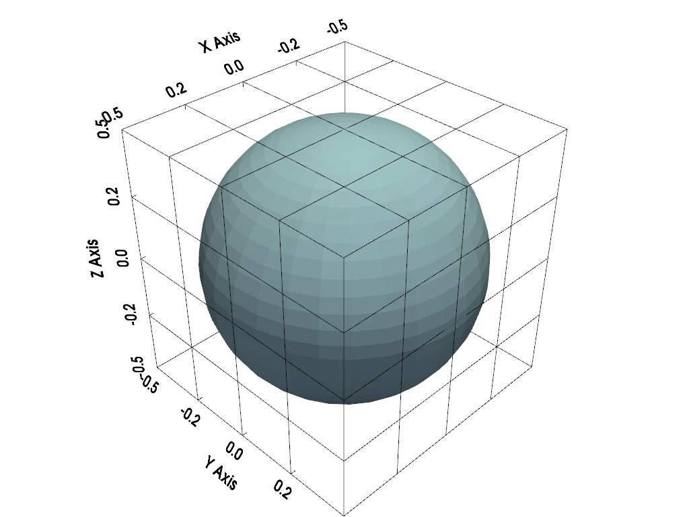
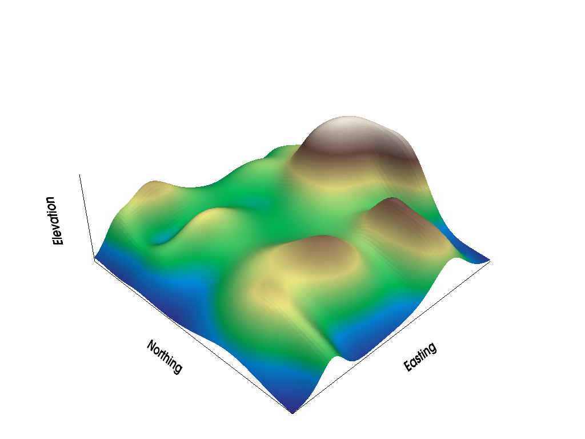

pyvista.Renderer.show_bounds#
- Renderer.show_bounds(mesh=None, bounds=None, axes_ranges=None, show_xaxis=True, show_yaxis=True, show_zaxis=True, show_xlabels=True, show_ylabels=True, show_zlabels=True, bold=True, font_size=None, font_family=None, color=None, xtitle='X Axis', ytitle='Y Axis', ztitle='Z Axis', n_xlabels=5, n_ylabels=5, n_zlabels=5, use_2d=False, grid=None, location='closest', ticks=None, all_edges=False, corner_factor=0.5, fmt=None, minor_ticks=False, padding=0.0, use_3d_text=True, render=None, **kwargs)[ソース]#
Add bounds axes.
Shows the bounds of the most recent input mesh unless mesh is specified.
- Parameters:
- mesh
pyvista.DataSet|pyvista.MultiBlock,optional Input mesh to draw bounds axes around.
- boundssequence[
float],optional Bounds to override mesh bounds in the form
[xmin, xmax, ymin, ymax, zmin, zmax].- axes_rangessequence[
float],optional When set, these values override the values that are shown on the axes. This can be useful when plotting scaled datasets or if you wish to manually display different values. These values must be in the form:
[xmin, xmax, ymin, ymax, zmin, zmax].- show_xaxisbool, default:
True Makes X axis visible.
- show_yaxisbool, default:
True Makes Y axis visible.
- show_zaxisbool, default:
True Makes Z axis visible.
- show_xlabelsbool, default:
True Shows X labels.
- show_ylabelsbool, default:
True Shows Y labels.
- show_zlabelsbool, default:
True Shows Z labels.
- boldbool, default:
True Bolds axis labels and numbers.
- font_size
float,optional Sets the size of the label font. Defaults to
pyvista.global_theme.font.size.- font_family
str,optional Font family. Must be either
'courier','times', or'arial'. Defaults topyvista.global_theme.font.family.- color
ColorLike,optional Color of all labels and axis titles. Defaults to
pyvista.global_theme.font.color.Either a string, RGB list, or hex color string. For example:
color='white'color='w'color=[1.0, 1.0, 1.0]color='#FFFFFF'
- xtitle
str, default: "X Axis" Title of the X axis. Default
"X Axis".- ytitle
str, default: "Y Axis" Title of the Y axis. Default
"Y Axis".- ztitle
str, default: "Z Axis" Title of the Z axis. Default
"Z Axis".- n_xlabels
int, default: 5 Number of labels for the X axis.
- n_ylabels
int, default: 5 Number of labels for the Y axis.
- n_zlabels
int, default: 5 Number of labels for the Z axis.
- use_2dbool, default:
False This can be enabled for smoother plotting.
- gridbool or
str,optional Add grid lines to the backface (
True,'back', or'backface') or to the frontface ('front','frontface') of the axes actor.- location
str, default: "closest" Set how the axes are drawn: either static (
'all'), closest triad ('front','closest','default'), furthest triad ('back','furthest'), static closest to the origin ('origin'), or outer edges ('outer') in relation to the camera position.- ticks
str,optional Set how the ticks are drawn on the axes grid. Options include:
'inside', 'outside', 'both'.- all_edgesbool, default:
False Adds an unlabeled and unticked box at the boundaries of plot. Useful for when wanting to plot outer grids while still retaining all edges of the boundary.
- corner_factor
float, default: 0.5 If
all_edges, this is the factor along each axis to draw the default box. Default shows the full box.- fmt
str,optional A format string defining how tick labels are generated from tick positions. A default is looked up on the active theme.
- minor_ticksbool, default:
False If
True, also plot minor ticks on all axes.- padding
float, default: 0.0 An optional percent padding along each axial direction to cushion the datasets in the scene from the axes annotations. Defaults no padding.
- use_3d_textbool, default:
True Use
vtkTextActor3Dfor titles and labels.- renderbool,
optional If the render window is being shown, trigger a render after showing bounds.
- **kwargs
dict,optional Deprecated keyword arguments.
- mesh
- Returns:
vtk.vtkCubeAxesActorBounds actor.
Examples
>>> import pyvista as pv >>> from pyvista import examples
>>> mesh = pv.Sphere() >>> plotter = pv.Plotter() >>> actor = plotter.add_mesh(mesh) >>> actor = plotter.show_bounds( ... grid='front', ... location='outer', ... all_edges=True, ... ) >>> plotter.show()
 Control how many labels are displayed.
>>> mesh = examples.load_random_hills()
>>> plotter = pv.Plotter() >>> actor = plotter.add_mesh( ... mesh, cmap='terrain', show_scalar_bar=False ... ) >>> actor = plotter.show_bounds( ... grid='back', ... location='outer', ... ticks='both', ... n_xlabels=2, ... n_ylabels=2, ... n_zlabels=2, ... xtitle='Easting', ... ytitle='Northing', ... ztitle='Elevation', ... ) >>> plotter.show()
Hide labels, but still show axis titles.
>>> plotter = pv.Plotter() >>> actor = plotter.add_mesh( ... mesh, cmap='terrain', show_scalar_bar=False ... ) >>> actor = plotter.show_bounds( ... grid='back', ... location='outer', ... ticks='both', ... show_xlabels=False, ... show_ylabels=False, ... show_zlabels=False, ... xtitle='Easting', ... ytitle='Northing', ... ztitle='Elevation', ... ) >>> plotter.show()
